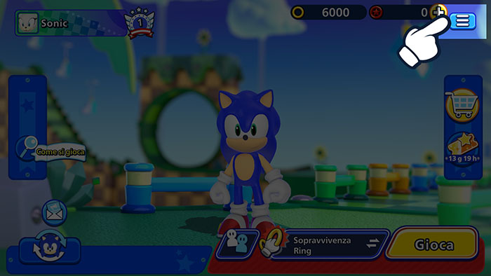
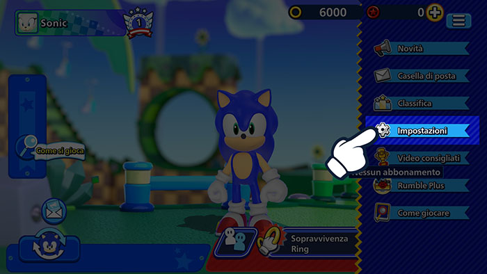
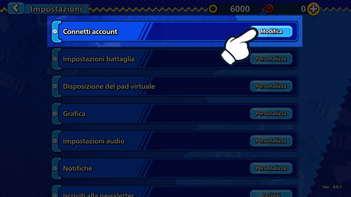
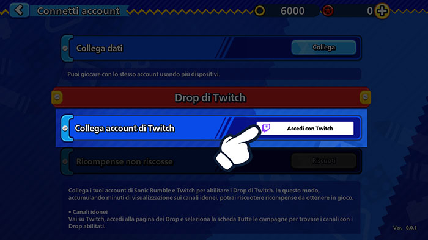
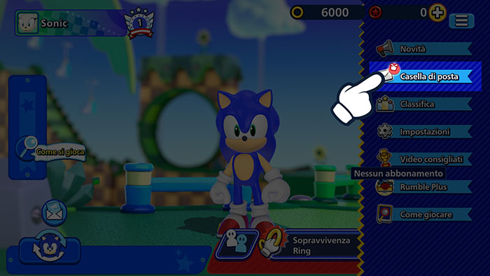
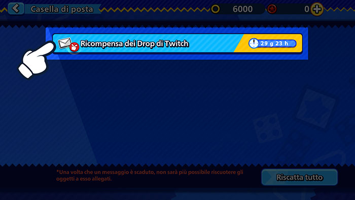

Drop di TwitchGuarda le dirette streaming e ottieni ricompense nel gioco!
Drop di TwitchGuarda le dirette streaming e ottieni ricompense nel gioco!
Collega ora il tuo account di Twitch!
Come collegare il tuo account
1Apri Sonic Rumble e clicca sul pulsante Menu.

2Vai su Impostazioni.

3Clicca su Connetti account.

4Seleziona Drop di Twitch e quindi Accedi con Twitch per accedere con il tuo account di Twitch.

5In questo modo il tuo account di Twitch e quello di Sonic Rumble saranno collegati.
Come accettare le ricompense
1Apri Sonic Rumble e clicca sul pulsante Menu.

2Visita la tua casella di posta per vedere le ricompense che hai ricevuto.

*Nel caso in cui una ricompensa venga inviata alla tua casella di posta mentre è in corso la manutenzione, potrebbe verificarsi un problema con il riscatto.
Se dovesse succedere, apri il menu, poi vai su Impostazioni > Connetti account > Drop di Twitch e clicca sul pulsante Riscatta per fare inviare nuovamente le ricompense alla tua casella di posta.
Domande frequenti
- QCosa sono i Drop di Twitch?
- AI Drop sono una tipologia di evento tramite cui ottenere ricompense da usare in gioco semplicemente guardando le dirette streaming su Twitch.
Per partecipare devi soltanto collegare il tuo account di Sonic Rumble al tuo account di Twitch. - QCome faccio a ricevere le ricompense?
- AAttiva la funzione dei Drop di Twitch, quindi guarda le dirette streaming di Sonic Rumble che soddisfano le condizioni per riempire il tuo indicatore dei Drop. Una volta che sarà pieno, potrai ricevere le ricompense.
- QCome verifico se sto effettivamente partecipando agli eventi dei Drop di Twitch?
- AClicca qui per accedere alla pagina dell'inventario Drop e controllare a quali eventi dei Drop stai partecipando e quali ricompense hai ricevuto.
- QQuanto tempo ci vuole per ricevere le ricompense dei Drop?
- ALe ricompense vengono spedite alla tua casella di posta nel gioco entro 24 ore.
Se desideri scollegare il tuo account dopo aver ottenuto le ricompense, ricordati di farlo solo dopo averle ricevute nel tuo account di Sonic Rumble. - QSe ho più account di Sonic Rumble, posso riscattare le ricompense con ciascuno?
- ALe ricompense dei Drop di Twitch sono riscattabili una singola volta. Inoltre, ogni account di Twitch può essere collegato a massimo un account di Sonic Rumble.
Lo stesso account di Twitch e lo stesso account di Sonic Rumble non possono riscattare la stessa ricompensa più di una volta.